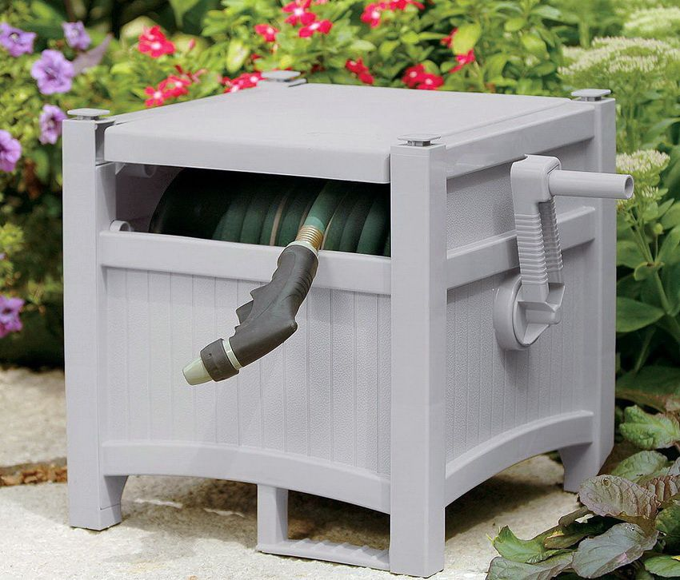
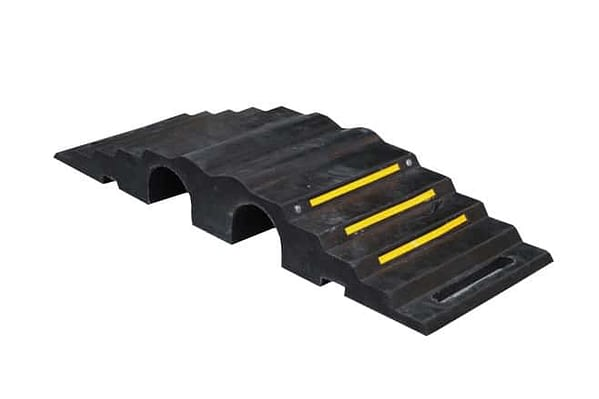
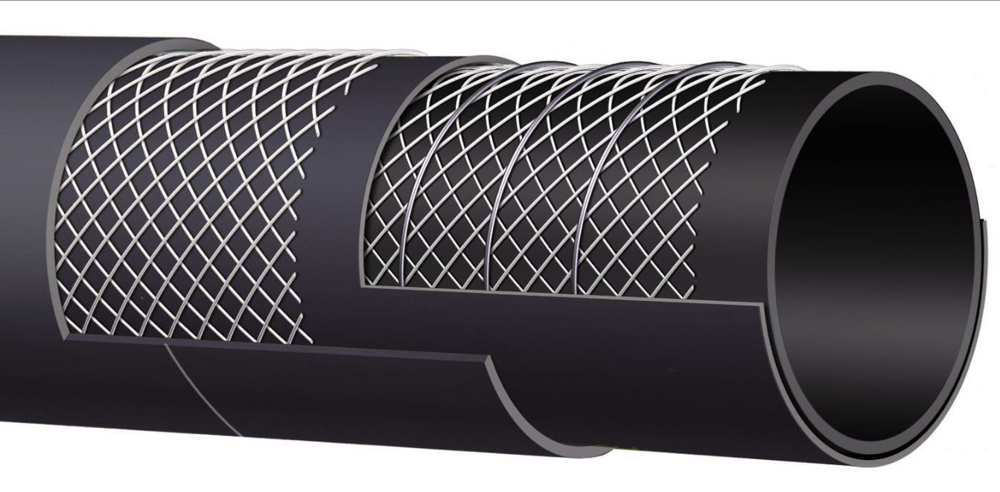

Žarnos - DRDtools.lt
2020.10.28 06:29

+370 656 08706 info@drdtools.lt Kontaktai Katalogas ELEKTRINIAI ĮRANKIAI Poliravimo įranga Poliruokliai Priedai Diskai Kempinės Kiti priedai Šlifavimo įranga Šlifuokliai glaistui Ekscentriniai šlifuokliai Daugiafunkciniai šlifuokliai Šlifavimo staklės Trikampiai šlifuokliai Juostiniai šlifuokliai Tiesiniai šlifuokliai Vibraciniai šlifuokliai Šlifuokliai betonui Vamzdžių šlifavimui Diskiniai šlifuokliai Priedai Šlifavimo diskai betonui Antgaliai Šlifavimo ritinėliai Abrazyvinės juostos Šlifavimo tinkleliai gipsui Šlifavimo diskai akmeniui Šlifavimo diskai plienui Šlifavimo diskai medžiui Švytrinis popierius Poliravimo diskai Žarnos Kiti šlifavimo/ poliravimo diskai Abrazyviniai/ vieliniai šepečiai šlifuokliams Atsarginės dalys / detalės Kampiniai šlifuokliai Kampiniai šlifuokliai (iki Ø 125 mm) Kampiniai šlifuokliai (iki Ø 230 mm) Gręžimo įrenginiai Gręžtuvai Perforatoriai SDS max SDS plius Smūginiai gręžtuvai Deimantinio gręžimo įrenginiai Gręžimo staklės / Stacionarūs įrenginiai Gręžtuvai-maišytuvai Kampiniai gręžtuvai Magnetiniai gręžtuvai Mini gręžtuvai Priedai Deimantinės karūnėles BI-METAL karūnėlės Karūnėlės medžiui Inkarai Kaltai/ grąžtai Kaltai betonui SDS+ SDS-Max Hex Kaltai medžiui Grąžtai metalui Grąžtai betonui SDS+ SDS-Max Hex Grąžtai medžiui Grąžtų rinkiniai Grąžtai stiklui ir keramikai Grąžtai pakopiniai Detalės Guoliai Stovai Stūmokliai Švaistikliai Volframinės karūnėlės Vamzdžiai Pjovimo įrenginiai Pjovimo staklės / Stacionarūs įrenginiai Medžio pjovimo staklės Metalo pjovimo staklės Plytelių pjovimo staklės Daugiafunkcinės staklės Pjūklo stalai Diskiniai pjūklai Siaurapjūkliai Elektriniai pjūklai Juostiniai pjūklai Tiesiniai pjūklai Vagapjovės Priedai Siaurapjūklių pjūklai Detalės Dentračiai Pjovimo ratukai Diskai sausam/šlapiam pjovimui Diskai sausam pjovimui Diskai šlapiam pjovimui Diskiniai pjūklai medienai Diskiniai pjūklai spalvotiesiems metalams Universalūs diskiniai pjūklai Žirklės metalui Orapūtės Orapūtės Priedai Obliai Lituokliai Litavimo stotelės Dujiniai lituokliai Vamzdžių lituokliai Plastiko remonto rinkiniai Indukciniai kaitintuvai Priedai Galąstuvai Galąstuvai Galąstuvų priedai Maišyklės Maišyklės Maišyklių priedai Juostiniai suktuvai Giluminiai vibratoriai Giluminiai vibratoriai betonui Giluminių vibratorių velenai Pjovimo peiliai polistirolui Frezavimo įrenginiai Frezeriai Frezavimo staklės Priedai El. vamzdžių sriegikliai Valymo / plovimo įranga Dulkių siurbliai Pramoniniai dulkių siurbliai Ciklonai Drožlių siurbliai Priedai Atskėlimo plaktukai Kabiamušiai Graveriai Medžio tekinimo staklės Metalo tekinimo staklės Klijų pistoletai El. Klijų pistoletai Priedai Daugiafunkciniai įrankiai Daugiafunkciniai įrankiai Priedai Tinklo adapteriai Kiti el.įrankiai SUVIRINIMO ĮRANGA MIG(Pusautomačiai) MMA TIG (Invertoriniai) Plazminiai pjovimo aparatai Taškinio suvirinimo įrenginiai "Spoteriai" MMA (Transformatoriniai) Skydeliai Stiklai skydeliams Detalės Degikliai Elektrodai Antgaliai Viela / tiekimo įtaisai Aušinimo ventiliatoriai Kabeliai Magnetai (laikikliai) Dujų reguliatoriai Diodai Pedalai Elektrodų džiovintuvai Jungikliai Štuceriai/ Lizdai Elektrodų laikikliai Tiltai Kiti priedai AKUMULIATORINIAI ĮRANKIAI Gręžtuvai-suktuvai Li-on Ni-Mh / Ni-Cd Perforatoriai Įrankių komplektai Pjūklai Diskiniai pjūklai Siaurapjūkliai Tiesiniai pjūklai Žirklės metalui Švytuokliniai pjūklai Grandininiai pjūklai Šlifuokliai Kampiniai šlifuokliai Tiesiniai šlifuokliai Daugiafunkciniai šlifuokliai Poliruokliai ir priedai Daugiafunkciniai įrankiai Kabiamušiai / viniamušiai Kniedikliai ir priedai Obliai Dulkių siurbliai Klijų/Silikono/Hermetiko pistoletai Radijo imtuvai Kt. akumuliatoriniai įrankiai Priedai akumuliatoriniams įrankiams Akumuliatoriai Krovikliai ir adapteriai Kt. priedai ŠILDYMO / VĖDINIMO ĮRANGA Dujiniai šildytuvai Dyzeliniai šildytuvai Elektriniai šildytuvai Infraraudonujų spindulių šildytuvai Oro sausintuvai Aušintuvai Klimato kontrolės technika Automobiliniai šildytuvai NIVELYRAI Lazeriniai nivelyrai Lazerio imtuvai ir priedai Optiniai nivelyrai Rotaciniai nivelyrai DAŽYMO ĮRANGA Dažymo aparatai Pulverizatoriai Priedai Tinkavimo pistoletai Aerografai AKUMULIATORIŲ KROVIKLIAI / DALYS SODO TECHNIKA Vėjapjovės Akumuliatorinės vejapjovės Benzininės vejapjovės Benzininės savaeigės vejapjovės Elektrinės vejapjovės Mechaninės Vejapjovės Robotai Trimeriai / Žoliapjovės Benzininiai trimeriai Elektriniai trimeriai Akumuliatoriniai trimeriai Valai Detalės Purkštuvai Akumuliatoriniai purkštuvai Benzininiai purkštuvai Rankiniai purkštuvai Barstytuvai Benzininiai grandininiai pjūklai Benzininiai grandininiai pjūklai Priedai Malkų skaldyklės Žemės grąžtai Šakų smulkintuvai Siurbliai Siurbliai švariam/ purvinam vandeniui Fekaliniai siurbliai Vandens/fekalinės žarnos Giluminiai siurbliai Membraniniai siurbliai Hidroforiniai siurbliai Benzininiai siurbliai Priedai siurbliams Generatoriai Benzininiai generatoriai Invertoriniai generatoriai Aeratoriai Gyvatvorių žirklės Gyvūnų kirpimo mašinėlės Pūstuvai Laistymo žarnos Fontanai Grėbliai Kibirai Namų apyvokos prekės Vibro pluokštės Sniego valymo įranga Kastuvai Valytuvai Kita benzininė technika ORO KOMPRESORIAI Vienfaziai oro kompresoriai Trifaziai oro kompresoriai Oro kompresoriai 12V Atsarginės dalys PNEUMATINIAI ĮRANKIAI Pneumatinės terkšlės galvutėms Pneumatiniai kabiamūšiai/ viniamušiai Kabiamušiai / Viniamušiai Kabės / vinys Kabės Vinys Pneumatiniai prapūtimo/ nupūtimo pistoletai Pneumatiniai praplovimo pistoletai Silikono/ germetiko/ gravitekso pistoletai Pneumatiniai gręžtuvai Pneumatiniai kaltai / plaktukai Pneumatiniai kniedikliai Pjovikliai/ kampiniai šlifuokliai Pneumatiniai tiesiniai šlifuokliai Ekscentriniai šlifuokliai Vibraciniai šlifuokliai Juostiniai šlifuokliai Pneumatiniai stiklo pjovikliai / žirklės Oro srauto reguliatoriai ir tepalinės Priedai pneumatiniams įrankiams Žarnos Jungimo movos Greitos jungtys Kištukai Oro paskirstytojai Antgaliai Poliravimui/ šlifavimui Pneumatiniai rinkiniai Pneumatiniai siaurapjūkliai AUTOSERVISO ĮRANKIAI Variklio ardymo, paskirstymo velenų fiksavimo, diržo, pompos skremulio, smagračio, alkūninių velenų įrankių rinkiniai Įrankiai variklio remontui Veleno remonto irankiai Diržų montavimo įrankiai Grandinių remonto įrankiai Smagračiai Siurblių nuėmėjai Kaiščiai Raktai ir adapteriai Kaitinimo ir kibirkštinių žvakių remontas Presavimo įrankiai: sailentblokų, guminių įvorių, guolių presavimas / Rinkiniai Nuėmėjai Įrankiai dyzeliniam / benzininiam įpurkškimui Įrankiai stabdžių sistemos remontui/ nuorinimui/ įrankiai diskiniams stabdžiams Įrankiai važiuoklės remontui: vairo traukių nuėmėjai, šarnyrų nuėmėjai, kiti įrankiai Skremulių, škivų atsukimo, vandens pompų nuėmimo, diržo įtempimo reguliavimo įrankiai Įrankiai vožtuvams, cilindrams, stūmokliams Vairo mechanizmo įrankiai Tepalinės Stebulės, kardano, stabdžių būgnų, pusašių iškalėjai, atbuliniai plaktukai Kuro siurbliai Tepalo filtro, kuro bako kamščių raktai Diagnostikos priemonės Įtampos keitikliai / automobiliniai šaldytuvai Įrankiai automobilių apdailos ardymui Specializuotos galvutės / Rinkiniai Įrankiai sunkvežimiams Tepalo išleidimo įrankiai Padidintos jėgos raktai Raktai ratams Įrankiai generatoriaus remontui Aušinimo ir kondicionavimo sistemos įrankiai Įrankiai sankabai / pavarų dėžės remontui Magnetiniai įrankiai: griebtuvai su LED lemputėmis, veidrodėliai, lėkštelės, juostelės ir kt. Rankinės, kojinės pompos Įrankiai automobilių stiklams ĮRANKIAI KĖBULO REMONTUI HIDRAULINĖ ĮRANGA Hidrauliniai presai Hidrauliniai cilindrai Hidraulinės pompos kojinės, rankinės Hidrauliniai spyruoklių suspaudėjai Nešiojami hidrauliniai įrenginiai Hidrauliniai kranai Hidrauliniai guolių nuėmikliai Hidrauliniai vamzdžių lankstytuvai Hidrauliniai motocikliniai keltuvai/ stovai Hidraulinės žirklės Kiti hidrauliniai įrankiai PADANGŲ / RATŲ SERVISO ĮRANGA PAKELĖJAI Hidrauliniai su ratukais, pastatomi Atramos/ stendai varikliams Atramos automobiliams Transmisijos Pneumo-hidrauliniai Pneumatiniai Mechaniniai Mašininiai hidrauliniai keltuvai Rampos Motocikliniai hidrauliniai keltuvai Priedai ĮRANKIŲ SPINTELĖS / GULTAI / DARBASTALIAI Kėdutės / gultai / vežimėliai Įrankių spintelės / įrankiai spintelėms / dėžės Darbastaliai VERŽLIASUKIAI Pneumatiniai veržliasukiai Elektriniai veržliasukiai Akumuliatoriniai veržliasukiai GERVĖS Elektrinės kėlimo gervės Akumuliatorinės traukimo gervės Grandininės kėlimo gervės Rankinės traukimo gervės Priedai gervėms Krovinio tvirtinimo diržai SMĖLIAVIMO ĮRANGA Smėliasrovės/ kabinos Rankinės smėliasrovės Priedai RANKINIAI ĮRANKIAI IR PRIEDAI Galvutės, galvučių ir įrankių rinkiniai Galvutės Galvutės 1/2" Galvutės 1/4" Galvutės 3/4" 6-kampų Galvutės 3/4" 12-kampų Galvutės 3/8" Galvutės 1" Galvutės smūginės 1/2" Galvutės smūginės ilgos 1/2" Galvutės smūginės ilgos 1" Galvutės smūginės 1" Galvutės smūginės ilgos 3/4" Galvutės smūginės 3/4" Smūginės E-tipo galvutės Galvutės sraigtinės, sugadintiems varžtams rinkiniai Plonasienės smūginės galvutės ratams Galvutės smūginės ilgos plonasienės 12-kampės 1/2" pusašiams ir kt. Šarnyrinės galvutės Galvučių prailgintuvai Sukomplektuotos galvutės 1" Sukomplektuotos galvutės 1/2" Sukomplektuotos galvutės 1/4" Sukomplektuotos galvutės 3/4" Sukomplektuotos galvutės 3/8" Galvutės E-Star tipo varžtams Galvutės coliniais dydžiais Daugiafunkcinės galvutės Kiauryminių galvučių komplektai Kombinuoti įrankių rinkiniai 1/4", 3/8", 1/2" Įrankių rinkinys 1" Įrankių rinkinys 1/2" Įrankių rinkinys 1/4" Įrankių rinkinys 3/4" Įrankių rinkinys 3/8" Galvučių rinkiniai Įrankių rinkiniai Rankenos galvutėms Ilgintuvai galvutėms Smūginiai ilgintuvai Galvučių laikikliai Vartomos/šarnyrinės rankenos su galvute Spyruokliniai ilgintuvai T-formos rankenos galvutėms ir antgaliams Rankenos galvutėms slankiojančiu kvadratu Spyruoklinės rankenos galvutėms, antgaliams Rankenėlės galvutėms ir antgaliams L-tipo rankenos galvutėms Vartomos rankenos galvutėms Bitukai, įpresuoti antgaliai, smūginiai antgaliai, antgalių rinkiniai, antgalių laikikliai Antgaliai įpresuoti į galvutę 1/2" Spline Antgaliai 5/16" (8 mm storio) Antgaliai įpresuoti į galvutę 1/2" T-star/Torx 5-kampiai antgaliai Antgaliai įpresuoti į galvutę 1/2", HEX Antgaliai įpresuoti į galvutę 1/4" Antgaliai įpresuoti į galvutę 3/8" Antgaliai Ribe Antgaliai smūginiai ir rinkiniai 1/2" Antgaliai smūginiai 3/4" Antgaliai 14 mm Antgaliai su galvutėmis 1/4" (6.3mm) Antgaliai/bitukai 1/4"(6.3 mm) Antgaliai/bitukai 3/8"(10mm) Antgalių laikikliai Antgalių rinkiniai Coliniai antgaliai Įpresuotų antgalių rinkiniai Smūginiai antgaliai 22 mm (Hex) galu Adapteriai, antgaliai, perėjimai, šarnyrai, kardanai galvutėms, antgaliams, smūginiai perėjimai Adapteriai/ perėjimai galvutėms/ kardanai Raktai Dinamometriniai raktai Plokšti/ kilpiniai/ reguliuojami/ su terkšle raktai Kombinuoti raktai su terkšle/ rinkiniai Raktų rinkiniai Kilpiniai raktai ir jų rinkiniai Šešiakampiai raktai E-TORX raktai Terkšlės Terkšlės galvutėms Terkšlės vartoma galvute Atsarginės dalys Kniedikliai Kniedės ir ats., dalys Replės Plaktukai Kaltai ir išmušėjai Atsuktuvai Gipso keltuvai Tvirtinimo elementai Pistoletai Vynims/ Kabėms Silikonui Laužtuvai Peiliai Staklės armatūros/ skardos lankstymui Tekinimo peiliai Vamzdžių raktai Vamzdžių lenkimo/valcavimo įrenginiai Vamzdžių kirpimo žirklės Vamzdžių lenkimo žiedai Vamzdžių sriegtuvai Tarpinės, manžetai, sąvaržos ir kt., smulkios detalės rinkiniuose Gnybtai Pleištukai Kirviai Žirklės Pjūklai Siaurapjūkliai Spynos, užraktai Pakabinamos spynos Spynos su trosu Trintuvės Mentės Rėžtukai Šlifuokliai Glaistikliai Drožtuvai Armatūros rišimo kabliai MATAVIMO PRIEMONĖS Diagnostinė įranga Drėgmės ir temperatūros matuokliai Elektros testeriai Zondai Garso lygio matuokliai Metalo detektoriai Radiatoriaus spaudimo ir aušinimo sistemos testavimo ir kt. įrankiai Atstumo matuokliai Gulščiukai ir gairės Liniuotės Ruletės Stovai ir strypai Prizmės reflektoriai Kelmeliai Storio matuokliai Teodolitas APŠVIETIMO PRIETAISAI ALYVOS / TEPALAI / AEROZOLIAI Alyvos Aerozoliai Automobilių plovimo chemija ELEKTROS VARIKLIAI Vienfaziai varikliai 0.5-1 KW 1-4 KW Trifaziai varikliai SPAUSTUVAI Plieniniai spaustuvai Rankiniai spaustuvai Pasukami spaustuvai Staklių spaustuvai Koordinatiniai spaustuvai Buitiniai spaustuvai ILGIKLIAI STATYBINIAI DRABUŽIAI IR APSAUGA Diržai Krepšiai Pirštinės Akiniai Apranga Laikikliai Vaikštynės TENTAI Kitos prekės Pradžia Naujausios prekės Akcijos Administravimo mokestis Kaip pirkti ? Apie mus Kontaktai Meniu
Pradžia Naujausios prekės Akcijos Administravimo mokestis Kaip pirkti ? Apie mus Kontaktai
Katalogas
ELEKTRINIAI ĮRANKIAI Poliravimo įranga Poliruokliai Priedai Diskai Kempinės Kiti priedai Šlifavimo įranga Šlifuokliai glaistui Ekscentriniai šlifuokliai Daugiafunkciniai šlifuokliai Šlifavimo staklės Trikampiai šlifuokliai Juostiniai šlifuokliai Tiesiniai šlifuokliai Vibraciniai šlifuokliai Šlifuokliai betonui Vamzdžių šlifavimui Diskiniai šlifuokliai Priedai Šlifavimo diskai betonui Antgaliai Šlifavimo ritinėliai Abrazyvinės juostos Šlifavimo tinkleliai gipsui Šlifavimo diskai akmeniui Šlifavimo diskai plienui Šlifavimo diskai medžiui Švytrinis popierius Poliravimo diskai Žarnos Kiti šlifavimo/ poliravimo diskai Abrazyviniai/ vieliniai šepečiai šlifuokliams Atsarginės dalys / detalės Kampiniai šlifuokliai Kampiniai šlifuokliai (iki Ø 125 mm) Kampiniai šlifuokliai (iki Ø 230 mm) Gręžimo įrenginiai Gręžtuvai Perforatoriai SDS max SDS plius Smūginiai gręžtuvai Deimantinio gręžimo įrenginiai Gręžimo staklės / Stacionarūs įrenginiai Gręžtuvai-maišytuvai Kampiniai gręžtuvai Magnetiniai gręžtuvai Mini gręžtuvai Priedai Deimantinės karūnėles BI-METAL karūnėlės Karūnėlės medžiui Inkarai Kaltai/ grąžtai Kaltai betonui SDS+ SDS-Max Hex Kaltai medžiui Grąžtai metalui Grąžtai betonui SDS+ SDS-Max Hex Grąžtai medžiui Grąžtų rinkiniai Grąžtai stiklui ir keramikai Grąžtai pakopiniai Detalės Guoliai Stovai Stūmokliai Švaistikliai Volframinės karūnėlės Vamzdžiai Pjovimo įrenginiai Pjovimo staklės / Stacionarūs įrenginiai Medžio pjovimo staklės Metalo pjovimo staklės Plytelių pjovimo staklės Daugiafunkcinės staklės Pjūklo stalai Diskiniai pjūklai Siaurapjūkliai Elektriniai pjūklai Juostiniai pjūklai Tiesiniai pjūklai Vagapjovės Priedai Siaurapjūklių pjūklai Detalės Dentračiai Pjovimo ratukai Diskai sausam/šlapiam pjovimui Diskai sausam pjovimui Diskai šlapiam pjovimui Diskiniai pjūklai medienai Diskiniai pjūklai spalvotiesiems metalams Universalūs diskiniai pjūklai Žirklės metalui Orapūtės Orapūtės Priedai Obliai Lituokliai Litavimo stotelės Dujiniai lituokliai Vamzdžių lituokliai Plastiko remonto rinkiniai Indukciniai kaitintuvai Priedai Galąstuvai Galąstuvai Galąstuvų priedai Maišyklės Maišyklės Maišyklių priedai Juostiniai suktuvai Giluminiai vibratoriai Giluminiai vibratoriai betonui Giluminių vibratorių velenai Pjovimo peiliai polistirolui Frezavimo įrenginiai Frezeriai Frezavimo staklės Priedai El. vamzdžių sriegikliai Valymo / plovimo įranga Dulkių siurbliai Pramoniniai dulkių siurbliai Ciklonai Drožlių siurbliai Priedai Atskėlimo plaktukai Kabiamušiai Graveriai Medžio tekinimo staklės Metalo tekinimo staklės Klijų pistoletai El. Klijų pistoletai Priedai Daugiafunkciniai įrankiai Daugiafunkciniai įrankiai Priedai Tinklo adapteriai Kiti el.įrankiai SUVIRINIMO ĮRANGA MIG(Pusautomačiai) MMA TIG (Invertoriniai) Plazminiai pjovimo aparatai Taškinio suvirinimo įrenginiai "Spoteriai" MMA (Transformatoriniai) Skydeliai Stiklai skydeliams Detalės Degikliai Elektrodai Antgaliai Viela / tiekimo įtaisai Aušinimo ventiliatoriai Kabeliai Magnetai (laikikliai) Dujų reguliatoriai Diodai Pedalai Elektrodų džiovintuvai Jungikliai Štuceriai/ Lizdai Elektrodų laikikliai Tiltai Kiti priedai AKUMULIATORINIAI ĮRANKIAI Gręžtuvai-suktuvai Li-on Ni-Mh / Ni-Cd Perforatoriai Įrankių komplektai Pjūklai Diskiniai pjūklai Siaurapjūkliai Tiesiniai pjūklai Žirklės metalui Švytuokliniai pjūklai Grandininiai pjūklai Šlifuokliai Kampiniai šlifuokliai Tiesiniai šlifuokliai Daugiafunkciniai šlifuokliai Poliruokliai ir priedai Daugiafunkciniai įrankiai Kabiamušiai / viniamušiai Kniedikliai ir priedai Obliai Dulkių siurbliai Klijų/Silikono/Hermetiko pistoletai Radijo imtuvai Kt. akumuliatoriniai įrankiai Priedai akumuliatoriniams įrankiams Akumuliatoriai Krovikliai ir adapteriai Kt. priedai ŠILDYMO / VĖDINIMO ĮRANGA Dujiniai šildytuvai Dyzeliniai šildytuvai Elektriniai šildytuvai Infraraudonujų spindulių šildytuvai Oro sausintuvai Aušintuvai Klimato kontrolės technika Automobiliniai šildytuvai NIVELYRAI Lazeriniai nivelyrai Lazerio imtuvai ir priedai Optiniai nivelyrai Rotaciniai nivelyrai DAŽYMO ĮRANGA Dažymo aparatai Pulverizatoriai Priedai Tinkavimo pistoletai Aerografai AKUMULIATORIŲ KROVIKLIAI / DALYS SODO TECHNIKA Vėjapjovės Akumuliatorinės vejapjovės Benzininės vejapjovės Benzininės savaeigės vejapjovės Elektrinės vejapjovės Mechaninės Vejapjovės Robotai Trimeriai / Žoliapjovės Benzininiai trimeriai Elektriniai trimeriai Akumuliatoriniai trimeriai Valai Detalės Purkštuvai Akumuliatoriniai purkštuvai Benzininiai purkštuvai Rankiniai purkštuvai Barstytuvai Benzininiai grandininiai pjūklai Benzininiai grandininiai pjūklai Priedai Malkų skaldyklės Žemės grąžtai Šakų smulkintuvai Siurbliai Siurbliai švariam/ purvinam vandeniui Fekaliniai siurbliai Vandens/fekalinės žarnos Giluminiai siurbliai Membraniniai siurbliai Hidroforiniai siurbliai Benzininiai siurbliai Priedai siurbliams Generatoriai Benzininiai generatoriai Invertoriniai generatoriai Aeratoriai Gyvatvorių žirklės Gyvūnų kirpimo mašinėlės Pūstuvai Laistymo žarnos Fontanai Grėbliai Kibirai Namų apyvokos prekės Vibro pluokštės Sniego valymo įranga Kastuvai Valytuvai Kita benzininė technika ORO KOMPRESORIAI Vienfaziai oro kompresoriai Trifaziai oro kompresoriai Oro kompresoriai 12V Atsarginės dalys PNEUMATINIAI ĮRANKIAI Pneumatinės terkšlės galvutėms Pneumatiniai kabiamūšiai/ viniamušiai Kabiamušiai / Viniamušiai Kabės / vinys Kabės Vinys Pneumatiniai prapūtimo/ nupūtimo pistoletai Pneumatiniai praplovimo pistoletai Silikono/ germetiko/ gravitekso pistoletai Pneumatiniai gręžtuvai Pneumatiniai kaltai / plaktukai Pneumatiniai kniedikliai Pjovikliai/ kampiniai šlifuokliai Pneumatiniai tiesiniai šlifuokliai Ekscentriniai šlifuokliai Vibraciniai šlifuokliai Juostiniai šlifuokliai Pneumatiniai stiklo pjovikliai / žirklės Oro srauto reguliatoriai ir tepalinės Priedai pneumatiniams įrankiams Žarnos Jungimo movos Greitos jungtys Kištukai Oro paskirstytojai Antgaliai Poliravimui/ šlifavimui Pneumatiniai rinkiniai Pneumatiniai siaurapjūkliai AUTOSERVISO ĮRANKIAI Variklio ardymo, paskirstymo velenų fiksavimo, diržo, pompos skremulio, smagračio, alkūninių velenų įrankių rinkiniai Įrankiai variklio remontui Veleno remonto irankiai Diržų montavimo įrankiai Grandinių remonto įrankiai Smagračiai Siurblių nuėmėjai Kaiščiai Raktai ir adapteriai Kaitinimo ir kibirkštinių žvakių remontas Presavimo įrankiai: sailentblokų, guminių įvorių, guolių presavimas / Rinkiniai Nuėmėjai Įrankiai dyzeliniam / benzininiam įpurkškimui Įrankiai stabdžių sistemos remontui/ nuorinimui/ įrankiai diskiniams stabdžiams Įrankiai važiuoklės remontui: vairo traukių nuėmėjai, šarnyrų nuėmėjai, kiti įrankiai Skremulių, škivų atsukimo, vandens pompų nuėmimo, diržo įtempimo reguliavimo įrankiai Įrankiai vožtuvams, cilindrams, stūmokliams Vairo mechanizmo įrankiai Tepalinės Stebulės, kardano, stabdžių būgnų, pusašių iškalėjai, atbuliniai plaktukai Kuro siurbliai Tepalo filtro, kuro bako kamščių raktai Diagnostikos priemonės Įtampos keitikliai / automobiliniai šaldytuvai Įrankiai automobilių apdailos ardymui Specializuotos galvutės / Rinkiniai Įrankiai sunkvežimiams Tepalo išleidimo įrankiai Padidintos jėgos raktai Raktai ratams Įrankiai generatoriaus remontui Aušinimo ir kondicionavimo sistemos įrankiai Įrankiai sankabai / pavarų dėžės remontui Magnetiniai įrankiai: griebtuvai su LED lemputėmis, veidrodėliai, lėkštelės, juostelės ir kt. Rankinės, kojinės pompos Įrankiai automobilių stiklams ĮRANKIAI KĖBULO REMONTUI HIDRAULINĖ ĮRANGA Hidrauliniai presai Hidrauliniai cilindrai Hidraulinės pompos kojinės, rankinės Hidrauliniai spyruoklių suspaudėjai Nešiojami hidrauliniai įrenginiai Hidrauliniai kranai Hidrauliniai guolių nuėmikliai Hidrauliniai vamzdžių lankstytuvai Hidrauliniai motocikliniai keltuvai/ stovai Hidraulinės žirklės Kiti hidrauliniai įrankiai PADANGŲ / RATŲ SERVISO ĮRANGA PAKELĖJAI Hidrauliniai su ratukais, pastatomi Atramos/ stendai varikliams Atramos automobiliams Transmisijos Pneumo-hidrauliniai Pneumatiniai Mechaniniai Mašininiai hidrauliniai keltuvai Rampos Motocikliniai hidrauliniai keltuvai Priedai ĮRANKIŲ SPINTELĖS / GULTAI / DARBASTALIAI Kėdutės / gultai / vežimėliai Įrankių spintelės / įrankiai spintelėms / dėžės Darbastaliai VERŽLIASUKIAI Pneumatiniai veržliasukiai Elektriniai veržliasukiai Akumuliatoriniai veržliasukiai GERVĖS Elektrinės kėlimo gervės Akumuliatorinės traukimo gervės Grandininės kėlimo gervės Rankinės traukimo gervės Priedai gervėms Krovinio tvirtinimo diržai SMĖLIAVIMO ĮRANGA Smėliasrovės/ kabinos Rankinės smėliasrovės Priedai RANKINIAI ĮRANKIAI IR PRIEDAI Galvutės, galvučių ir įrankių rinkiniai Galvutės Galvutės 1/2" Galvutės 1/4" Galvutės 3/4" 6-kampų Galvutės 3/4" 12-kampų Galvutės 3/8" Galvutės 1" Galvutės smūginės 1/2" Galvutės smūginės ilgos 1/2" Galvutės smūginės ilgos 1" Galvutės smūginės 1" Galvutės smūginės ilgos 3/4" Galvutės smūginės 3/4" Smūginės E-tipo galvutės Galvutės sraigtinės, sugadintiems varžtams rinkiniai Plonasienės smūginės galvutės ratams Galvutės smūginės ilgos plonasienės 12-kampės 1/2" pusašiams ir kt. Šarnyrinės galvutės Galvučių prailgintuvai Sukomplektuotos galvutės 1" Sukomplektuotos galvutės 1/2" Sukomplektuotos galvutės 1/4" Sukomplektuotos galvutės 3/4" Sukomplektuotos galvutės 3/8" Galvutės E-Star tipo varžtams Galvutės coliniais dydžiais Daugiafunkcinės galvutės Kiauryminių galvučių komplektai Kombinuoti įrankių rinkiniai 1/4", 3/8", 1/2" Įrankių rinkinys 1" Įrankių rinkinys 1/2" Įrankių rinkinys 1/4" Įrankių rinkinys 3/4" Įrankių rinkinys 3/8" Galvučių rinkiniai Įrankių rinkiniai Rankenos galvutėms Ilgintuvai galvutėms Smūginiai ilgintuvai Galvučių laikikliai Vartomos/šarnyrinės rankenos su galvute Spyruokliniai ilgintuvai T-formos rankenos galvutėms ir antgaliams Rankenos galvutėms slankiojančiu kvadratu Spyruoklinės rankenos galvutėms, antgaliams Rankenėlės galvutėms ir antgaliams L-tipo rankenos galvutėms Vartomos rankenos galvutėms Bitukai, įpresuoti antgaliai, smūginiai antgaliai, antgalių rinkiniai, antgalių laikikliai Antgaliai įpresuoti į galvutę 1/2" Spline Antgaliai 5/16" (8 mm storio) Antgaliai įpresuoti į galvutę 1/2" T-star/Torx 5-kampiai antgaliai Antgaliai įpresuoti į galvutę 1/2", HEX Antgaliai įpresuoti į galvutę 1/4" Antgaliai įpresuoti į galvutę 3/8" Antgaliai Ribe Antgaliai smūginiai ir rinkiniai 1/2" Antgaliai smūginiai 3/4" Antgaliai 14 mm Antgaliai su galvutėmis 1/4" (6.3mm) Antgaliai/bitukai 1/4"(6.3 mm) Antgaliai/bitukai 3/8"(10mm) Antgalių laikikliai Antgalių rinkiniai Coliniai antgaliai Įpresuotų antgalių rinkiniai Smūginiai antgaliai 22 mm (Hex) galu Adapteriai, antgaliai, perėjimai, šarnyrai, kardanai galvutėms, antgaliams, smūginiai perėjimai Adapteriai/ perėjimai galvutėms/ kardanai Raktai Dinamometriniai raktai Plokšti/ kilpiniai/ reguliuojami/ su terkšle raktai Kombinuoti raktai su terkšle/ rinkiniai Raktų rinkiniai Kilpiniai raktai ir jų rinkiniai Šešiakampiai raktai E-TORX raktai Terkšlės Terkšlės galvutėms Terkšlės vartoma galvute Atsarginės dalys Kniedikliai Kniedės ir ats., dalys Replės Plaktukai Kaltai ir išmušėjai Atsuktuvai Gipso keltuvai Tvirtinimo elementai Pistoletai Vynims/ Kabėms Silikonui Laužtuvai Peiliai Staklės armatūros/ skardos lankstymui Tekinimo peiliai Vamzdžių raktai Vamzdžių lenkimo/valcavimo įrenginiai Vamzdžių kirpimo žirklės Vamzdžių lenkimo žiedai Vamzdžių sriegtuvai Tarpinės, manžetai, sąvaržos ir kt., smulkios detalės rinkiniuose Gnybtai Pleištukai Kirviai Žirklės Pjūklai Siaurapjūkliai Spynos, užraktai Pakabinamos spynos Spynos su trosu Trintuvės Mentės Rėžtukai Šlifuokliai Glaistikliai Drožtuvai Armatūros rišimo kabliai MATAVIMO PRIEMONĖS Diagnostinė įranga Drėgmės ir temperatūros matuokliai Elektros testeriai Zondai Garso lygio matuokliai Metalo detektoriai Radiatoriaus spaudimo ir aušinimo sistemos testavimo ir kt. įrankiai Atstumo matuokliai Gulščiukai ir gairės Liniuotės Ruletės Stovai ir strypai Prizmės reflektoriai Kelmeliai Storio matuokliai Teodolitas APŠVIETIMO PRIETAISAI ALYVOS / TEPALAI / AEROZOLIAI Alyvos Aerozoliai Automobilių plovimo chemija ELEKTROS VARIKLIAI Vienfaziai varikliai 0.5-1 KW 1-4 KW Trifaziai varikliai SPAUSTUVAI Plieniniai spaustuvai Rankiniai spaustuvai Pasukami spaustuvai Staklių spaustuvai Koordinatiniai spaustuvai Buitiniai spaustuvai ILGIKLIAI STATYBINIAI DRABUŽIAI IR APSAUGA Diržai Krepšiai Pirštinės Akiniai Apranga Laikikliai Vaikštynės TENTAI Kitos prekėsNaujienos
Automatinis akumuliatorių įkroviklis 6/12V (KD1289)
29.29 EUR PREKĖS INFORMACIJABenzininis generatorius 3500W, 2600-3800aps/min (M82482)
436.54 EUR PREKĖS INFORMACIJAGiljotina lakštiniam metalui ir strypams, peilio ilgis 125 mm (KD1588)
68.00 EUR PREKĖS INFORMACIJAAkumuliatoriaus įkroviklis su mikroprocesoriumi 10A 6/8/12/14/16/24 V (KD1919)
37.40 EUR PREKĖS INFORMACIJADinamometrinis raktas 1/2" 28-210Nm profesionalus Tvardy (T00020)
38.93 EUR PREKĖS INFORMACIJABenzininis vienfazis generatorius 5000W 2X 230V/12V vienfazis (KD145)
505.00 EUR PREKĖS INFORMACIJADildžių rinkinys metalui 6vnt (KD10287)
4.82 EUR PREKĖS INFORMACIJAFrezeris kaištiniams jungikliams (dygių freza) 1250W (KD1960)
60.81 EUR PREKĖS INFORMACIJAAkumuliatoriaus įkroviklis su mikroprocesoriumi 10A 12/24V (KD1918)
32.21 EUR PREKĖS INFORMACIJADinamometrinis raktas 3/8" 19-110Nm Profesionalus Tvardy (T00021)
37.40 EUR PREKĖS INFORMACIJAElektros variklis 1,1KW 220V (KD1800)
79.50 EUR PREKĖS INFORMACIJADujinis degiklis su piezo uždegimu 1300°C (KD10381)
4.60 EUR PREKĖS INFORMACIJAApsauginis skydelis veidui (OT-19)
3.99 EUR PREKĖS INFORMACIJAGrąžtų galąstuvas 95W 3-16mm (KD1560)
25.95 EUR PREKĖS INFORMACIJAElektros variklis 0,75KW 380V (KD1809)
68.91 EUR PREKĖS INFORMACIJABeorio dažymo aparatas 1500W, 225 bar (KD1745)
565.20 EUR PREKĖS INFORMACIJABenzininis vienfazis generatorius be ratukų 2500W 12/230V (KD116)
165.10 EUR PREKĖS INFORMACIJAAlkūnė kompresorių atbuliniams vožtuvams (APWST)
2.97 EUR PREKĖS INFORMACIJAGalvučių ir raktų rinkinys 1/4''+1/2'', 122d. (KD309)
65.67 EUR PREKĖS INFORMACIJAElektrinis viniamušis / kabiamušis 230V, 50W (KD10519)
19.46 EUR PREKĖS INFORMACIJABenzininis generatorius 2000W, 2600-3800aps/min (M82483)
264.68 EUR PREKĖS INFORMACIJABenzininis vienfazis generatorius be ratukų 2200W (KD146)
142.50 EUR PREKĖS INFORMACIJAAkumuliatoriaus įkroviklis su mikroprocesoriumi 12V/24V 60-200Ah (KD1920)
26.24 EUR PREKĖS INFORMACIJAGiljotina lakštiniam metalui ir strypams, peilio ilgis 200 mm (KD1589)
90.51 EUR PREKĖS INFORMACIJAAkumuliatorinis suktuvas-gręžtuvas 18V Li-Ion (KD1572)
45.65 EUR PREKĖS INFORMACIJAAkumuliatoriaus įkroviklis su mikroprocesoriumi 15A 6/12V (KD1917)
24.26 EUR PREKĖS INFORMACIJADujinis degiklis su piezo uždegimu 1300°C (KD10380)
4.60 EUR PREKĖS INFORMACIJABenzininis vandens siurblys / pompa 1" (KD5060)
105.38 EUR PREKĖS INFORMACIJA2 kolonų elektrohidraulinis keltuvas SMART EQUIPMENT STJH400F
1190.00 EUR PREKĖS INFORMACIJAGrąžtų rinkinys HSS, titano nitridas, 1,5 - 12,7 mm | 29 vnt. (KD10344)
13.44 EUR PREKĖS INFORMACIJACreated jtemplate joomla templates
Mes rūšiuojam!
Žarnos
Žarna aukšto spaudimo 8x13mm armuota PANSAM Gamintojas: Pansam Plačiau Žarna aukšto spaudimo 10x15mm armuota PANSAM Gamintojas: Pansam Plačiau Žarna aukšto spaudimo 12x17mm armuota PANSAM Gamintojas: Pansam Plačiau Žarna aukšto spaudimo 6x11mm armuota PANSAM Gamintojas: Pansam Plačiau Žarna acetilenui 6/13*20bar (ŽA-6/13) 0.91 EUR Plačiau PirktiŽarna benzinui/orui/tepalui 6,3/13mm, 20bar (ŽB-6,3/13) 1.05 EUR Plačiau Pirkti
Žarna acetilenui 8/15*20bar (ŽA-8/15) 1.14 EUR Plačiau Pirkti
Žarna benzinui/orui/tepalui 8/15mm, 20bar (ŽB-8/15) 1.17 EUR Plačiau Pirkti
Žarna benzinui/orui/tepalui 10/17mm, 20bar (ŽB-10/17) 1.91 EUR Plačiau Pirkti
Žarna benzinui/orui/tepalui 12,7/20mm, 20bar (ŽB-12,7/20) 2.43 EUR Plačiau Pirkti
Spiralinė oro žarna su antgaliais 5x8x10 m, PE (50810PE) Gamintojas: Essen tools 2.80 EUR Plačiau Pirkti
Žarna pripūtimo manometrui su adapteriu | 1 m (3242-1) Gamintojas: BGS 3.41 EUR Plačiau Pirkti
Spiralinė oro žarna su antgaliais 5x8x15 m, PE (50815PE) Gamintojas: Essen tools 3.60 EUR Plačiau Pirkti
Pneumatinė žarna 8x12mm, 5M, PE, su antgaliais (PE05M) Gamintojas: Essen tools 4.00 EUR Plačiau Pirkti
Spiralinė oro žarna su antgaliais 5x8x20 m, PE (50820PE) Gamintojas: Essen tools 4.00 EUR Plačiau Pirkti
Žarna oro kompresoriui spiralinė 5m, 8mm 1/4 12bar PANSAM Gamintojas: Pansam 4.03 EUR Plačiau Pirkti
Žarna spiralinė plastikinė su antgaliais 10m, 6x8mm (KD414) Gamintojas: KRAFTDELE 4.06 EUR Plačiau Pirkti
Žarna pumpuoti 44cm (A533051) Gamintojas: Pansam 4.45 EUR Plačiau Pirkti
Pneumatinė žarna 8x12mm, 10M, PE, su antgaliais (PE10M) Gamintojas: Essen tools 5.33 EUR Plačiau Pirkti
Žarna oro spiralinė 10m 8mm 1/4 12bar PANSAM Gamintojas: Pansam 5.50 EUR Plačiau Pirkti
Oro žarna su antgaliais | 8x12 mm | 10 m (ES30010) Gamintojas: Essen tools 5.50 EUR Plačiau Pirkti
Žarna benzinui 25/36mm, 20bar (ŽB-25/36) 6.00 EUR Plačiau Pirkti
Žarna oro spiralinė 5m 8mm 1/4 12bar (neužspaudžiama) PANSAM (A533080) Gamintojas: Pansam 6.10 EUR Plačiau Pirkti
Žarna pumpuoti 100cm (A533052) Gamintojas: Pansam 6.20 EUR Plačiau Pirkti
Žarna pripūtimo manometrui | 0.4 m (55401) Gamintojas: BGS 6.25 EUR Plačiau Pirkti
Žarna spiralinė plastikinė su antgaliais 15m, 8x10mm (KD417) Gamintojas: KRAFTDELE 6.65 EUR Plačiau Pirkti
Pneumatinė žarna su antgaliais 8x12mm, 5M, PU (PU5M) Gamintojas: Essen tools 7.00 EUR Plačiau Pirkti
Oro žarna su antgaliais 8x12x15 m, PVC (15812PVC) Gamintojas: Essen tools 7.00 EUR Plačiau Pirkti
Pneumatinė žarna su antgaliais 5.5 x 8mm 5M, PU (YT-24201) Gamintojas: Yato 7.00 EUR Plačiau Pirkti
Oro žarna su antgaliais | 8x12 mm | 15 m (ES30015) Gamintojas: Essen tools 7.50 EUR Plačiau Pirkti
Pneumatinė žarna 8x12mm, 15M, PE, su antgaliais (PE15M) Gamintojas: Essen tools 7.97 EUR Plačiau Pirkti
Oro žarna su antgaliais | 8x12 mm | 20 m (ES30020) Gamintojas: Essen tools 8.50 EUR Plačiau Pirkti
Pneumatinė žarna su antgaliais 8x12mm, 10M, PU (PU10M) Gamintojas: Essen tools 8.62 EUR Plačiau Pirkti
Oro žarna su antgaliais 8x12x20 m, PVC (20812PVC) Gamintojas: Essen tools 9.00 EUR Plačiau Pirkti
SUSPAUSTO ORO ŽARNA, SU JUNGTIMIS (PVC) 15M, 8X12MM (M80473) Gamintojas: Marpol 9.33 EUR Plačiau Pirkti
Pneumatinė žarna | Hybrid | 6,5 mm x 10 m (YT-24230) Gamintojas: Yato 9.70 EUR Plačiau Pirkti
Pneumatinė žarna su antgaliais 8x12mm, 8M, PU (PU8M) Gamintojas: Essen tools 10.00 EUR Plačiau Pirkti
Pneumatinė žarna su antgaliais 6.5 x 10mm 5M, PU (YT-24204) Gamintojas: Yato 10.00 EUR Plačiau Pirkti
Pneumatinė žarna 6/10mmx10m PU Gamintojas: Bass 10.14 EUR Plačiau Pirkti
Žarna oro spiralinė 10m 8mm 1/4 12bar (neužspaudžiama) PANSAM (A533081) Gamintojas: Pansam 10.18 EUR Plačiau Pirkti
Žarna oro spiralinė 5m 12mm 1/4 12bar (neužspaudžiama) PANSAM Gamintojas: Pansam 10.44 EUR Plačiau Pirkti
Pneumatinė žarna 8x12mm, 20M, PE, su antgaliais (PE20M) Gamintojas: Essen tools 11.00 EUR Plačiau Pirkti
SUSPAUSTO ORO ŽARNA, SU JUNGTIMIS (PULERITANINĖ) 10M, 8X12MM (M80481) Gamintojas: Marpol 14.13 EUR 11.04 EUR Plačiau Pirkti
Žarna pneumatiniams įrankiams 530mm Gamintojas: BGS 11.50 EUR Plačiau Pirkti
Oro žarna, 10m x 6mm (3250) Gamintojas: BGS 12.00 EUR Plačiau Pirkti
Pneumatinė žarna su antgaliais 8x12mm, 15M, PU (PU15M) Gamintojas: Essen tools 12.00 EUR Plačiau Pirkti
Pneumatinė žarna | Hybrid | 8 mm x 10 m (YT-24233) Gamintojas: Yato 12.00 EUR Plačiau Pirkti
Pneumatinė žarna guminė su antgaliais 10x17x10M (GU101710-WN) Gamintojas: Essen tools 13.00 EUR Plačiau Pirkti
1 2 3 4 Tolesnis Paskutinis Rezultatai 1 - 48 iš 147
DARBO LAIKAS:
Pr. 9 00 -17 00 val.
An. 9 00 -17 00 val.
Tr. 9 00 -17 00 val.
Kt. 9 00 -17 00 val.
Pn. 9 00 -16 30 val.
PREKIŲ PRISTATYMAS
BANKO KORTELĖS
IŠSIMOKĖTINAI
Gamintojai
DRDtools.lt © 2013-2020. Visos teises saugomos. Pradžia Naujausios prekės Akcijos Administravimo mokestis Kaip pirkti ? Apie mus KontaktaiSiekdami pagerinti Jūsų naršymo kokybę, statistiniais ir rinkodaros tikslais šioje svetainėje naudojami slapukai (angl. „cookies“). Sutikdami, paspauskite mygtuką „Sutinku“ arba naršykite toliau. Savo duotą sutikimą bet kada galėsite atšaukti pakeisdami savo interneto naršyklės nustatymus ir ištrindami įrašytus slapukus.
Sutinku Privatumo politika- Vandens žarnos | Guminės ir transportavimo žarnos - Hidrobalt
- Pramoninės žarnos - Hidrobalt
- Vandens žarnos - ErumAqua
- Lanksčios Žarnos - staliams.lt
- Žarnos, jungės dušams | Senukai.lt
- Žarnos
- Žarnos | TECHNOBALTIC
- Žarnos | www.siurbliai.lt
- Žarnos - Utenos Agroprekyba
- Storosios žarnos vėžio prevencinė programa
- Vandens žarnos | Guminės ir transportavimo žarnos - Hidrobalt
Pradinis » Komponentai pramonei » PRAMONINĖS ŽARNOS Ieškoti. Rodyti tik prekes sandėlyje Rodyti tik akcijines prekes Rodyti kainas su PVM PRAMONINĖS ŽARNOS. APKABOS (9) 5. 3. 1. PRAMONINĖS JUNGTYS (5) 2. 2. PNEUMOTRANSPORTO . VANDENIUI IR ORUI ...
- Pramoninės žarnos - Hidrobalt
Žarnos Jungimo movos Greitos jungtys Kištukai Oro paskirstytojai Antgaliai Poliravimui/ šlifavimui Pneumatiniai rinkiniai Pneumatiniai siaurapjūkliai AUTOSERVISO ĮRANKIAI Variklio ardymo, paskirstymo velenų fiksavimo, diržo, pompos skremulio, smagračio, alkūninių velenų įrankių rinkiniai Įrankiai variklio remontui Veleno remonto ...
- Vandens žarnos - ErumAqua
Gaisrinės žarnos vidaus čiaupams komplektas Ø 52 mm. (ilgis 20 m., 2galvutės GR-50(GOST ) 10 bar. Pagaminta ES
- Lanksčios Žarnos - staliams.lt
– Apie mus – Kontaktai – Privatumo politika – Pristatymas ir grąžinimas . Utenos Agroprekyba, UAB Stoties g. 28, Utena +370 699 95478. utenosagroprekyba@gmail.com
- Žarnos, jungės dušams | Senukai.lt
Dirgliosios žarnos sindromas (anglų k. “leaky gut syndrome”) yra sparčiai plintanti būklė, milijonai žmonių kovoja su ja arba net nežino, kad ja serga.Iš jo pavadinimo galite manyti, kad dirgliosios žarnos (“pralaidaus žarnyno”) sindromas paveikia tik virškinimo sistemą, tačiau iš tikrųjų tai gali sukelti daug kitų sveikatos problemų.
- Žarnos
Kraujavimas iš virškinamojo trakto – tai ūmus, gausus, dažnai lėtinis ir nepastebimas arba ,,slaptas“ kraujavimas iš viršutinės virškinimo kanalo dalies (stemplė, skrandis, dvylikapirštė žarna) ar apatinės virškinimo kanalo dalies (tuščioji, klubinė, storoji ir tiesioji žarna). Iš visų kraujavimo iš virškinamojo kanalo atvejų apie 80–90 % yra kraujavimas iš ...
- Žarnos | TECHNOBALTIC
Lanksčios žarnos. Read more. Prekių pristatymas. Prekės bus atvežtos į bet kurį Lietuvos miestą ar gyvenvietę, Jūsų nurodytu adresu, iki pat durų.
- Žarnos | www.siurbliai.lt
Dušo žarna Thema Lux 700015, 150 cm, 1/2'' Medžiaga: Nerūdijantis plienas, Polivinilchloridas (PVC) Žarnos ilgis: 150 cm
- Žarnos - Utenos Agroprekyba
Storosios žarnos vėžio prevencinė programa. Storosios žarnos vėžio ankstyvosios diagnostikos prevencinė programa teikiama asmenims nuo 50 m. iki 74 m. amžiaus, vieną kartą per dvejus metus. Dėl dalyvavimo programoje turėtų kreiptis į savo šeimos gydytoją. Programos priemonės:
- Storosios žarnos vėžio prevencinė programa
Reikalingos pramoninės žarnos vandeniui? Susipažinkite su mūsų asortimentu! Apollo SE, 202AA, Nettuno FF, Mercurio M, Hilcoflex, Klenet, Ragno CR ir kt.
Pradinis » Komponentai pramonei » PRAMONINĖS ŽARNOS Ieškoti. Rodyti tik prekes sandėlyje Rodyti tik akcijines prekes Rodyti kainas su PVM PRAMONINĖS ŽARNOS. APKABOS (9) 5. 3. 1. PRAMONINĖS JUNGTYS (5) 2. 2. PNEUMOTRANSPORTO . VANDENIUI IR ORUI ...
Žarnos Jungimo movos Greitos jungtys Kištukai Oro paskirstytojai Antgaliai Poliravimui/ šlifavimui Pneumatiniai rinkiniai Pneumatiniai siaurapjūkliai AUTOSERVISO ĮRANKIAI Variklio ardymo, paskirstymo velenų fiksavimo, diržo, pompos skremulio, smagračio, alkūninių velenų įrankių rinkiniai Įrankiai variklio remontui Veleno remonto ...
Gaisrinės žarnos vidaus čiaupams komplektas Ø 52 mm. (ilgis 20 m., 2galvutės GR-50(GOST ) 10 bar. Pagaminta ES
– Apie mus – Kontaktai – Privatumo politika – Pristatymas ir grąžinimas . Utenos Agroprekyba, UAB Stoties g. 28, Utena +370 699 95478. utenosagroprekyba@gmail.com
Dirgliosios žarnos sindromas (anglų k. “leaky gut syndrome”) yra sparčiai plintanti būklė, milijonai žmonių kovoja su ja arba net nežino, kad ja serga.Iš jo pavadinimo galite manyti, kad dirgliosios žarnos (“pralaidaus žarnyno”) sindromas paveikia tik virškinimo sistemą, tačiau iš tikrųjų tai gali sukelti daug kitų sveikatos problemų.
Kraujavimas iš virškinamojo trakto – tai ūmus, gausus, dažnai lėtinis ir nepastebimas arba ,,slaptas“ kraujavimas iš viršutinės virškinimo kanalo dalies (stemplė, skrandis, dvylikapirštė žarna) ar apatinės virškinimo kanalo dalies (tuščioji, klubinė, storoji ir tiesioji žarna). Iš visų kraujavimo iš virškinamojo kanalo atvejų apie 80–90 % yra kraujavimas iš ...
Lanksčios žarnos. Read more. Prekių pristatymas. Prekės bus atvežtos į bet kurį Lietuvos miestą ar gyvenvietę, Jūsų nurodytu adresu, iki pat durų.
Dušo žarna Thema Lux 700015, 150 cm, 1/2'' Medžiaga: Nerūdijantis plienas, Polivinilchloridas (PVC) Žarnos ilgis: 150 cm
Storosios žarnos vėžio prevencinė programa. Storosios žarnos vėžio ankstyvosios diagnostikos prevencinė programa teikiama asmenims nuo 50 m. iki 74 m. amžiaus, vieną kartą per dvejus metus. Dėl dalyvavimo programoje turėtų kreiptis į savo šeimos gydytoją. Programos priemonės:
Reikalingos pramoninės žarnos vandeniui? Susipažinkite su mūsų asortimentu! Apollo SE, 202AA, Nettuno FF, Mercurio M, Hilcoflex, Klenet, Ragno CR ir kt.
  